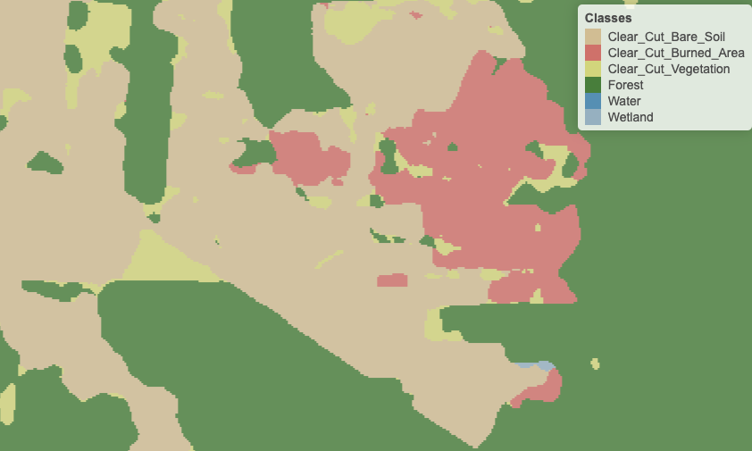
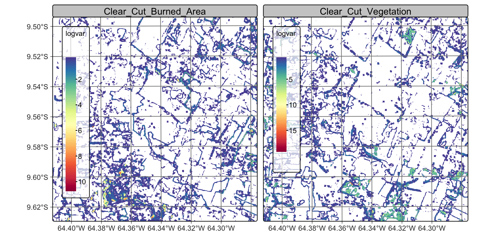
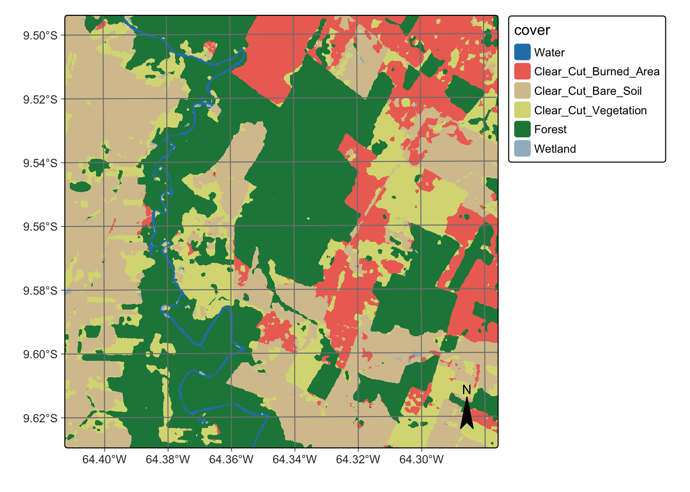

# load packages "torch" and "luz"
library(torch)
library(luz)
torch::install_torch()
# load packages "sits" and "sitsdata"
library(sits)
library(sitsdata)
# set tempdir if it does not exist
tempdir_r <- "~/sitsbook/tempdir/R/cl_smoothing"
dir.create(tempdir_r, showWarnings = FALSE)19 Bayesian smoothing for classification post-processing
Configurations to run this chapter
# load "pysits" library
from pysits import *
from pathlib import Path
# set tempdir if it does not exist
tempdir_py = Path.home() / "sitsbook/tempdir/Python/cl_smoothing"
tempdir_py.mkdir(parents=True, exist_ok=True)
19.1 Introduction
Machine learning algorithms rely on training samples that are derived from “pure” pixels, hand-picked by users to represent the desired output classes. Given the presence of mixed pixels in images regardless of resolution, and the considerable data variability within each class, these classifiers often produce results with outliers or misclassified pixels. Therefore, post-processing techniques have become crucial to refine the labels of a classified image [1]. Post-processing methods reduce salt-and-pepper and border effects, where single pixels or small groups of pixels are classified differently from their larger surrounding areas; these effects lead to visual discontinuity and inconsistency. By mitigating these errors and minimizing noise, post-processing improves the quality of the initial classification results, bringing a significant gain in the overall accuracy and interpretability of the final output [2].
The sits package uses a time-first, space-later approach. Since machine learning classifiers in sits are mostly pixel-based, it is necessary to complement them with spatial smoothing methods. These methods improve the accuracy of land classification by incorporating spatial and contextual information into the classification process. The smoothing method available in sits uses an Empirical Bayes approach, adjusted to the specific properties of land classification. The assumption is that class probabilities at the local level should be similar and provide the baseline for comparison with the pixel values produced by the classifier. Based on these two elements, Bayesian smoothing adjusts the probabilities for the pixels, considering a spatial dependence [3].
19.2 The need for post-processing
The main idea behind our post-processing method is that a pixel-based classification should take into account its neighborhood pixels. Consider the figure blow which shows a class assignment produced by a random forest algorithm on a image time series. The classified map has been produced by taking, for each pixel, the class of higher probability produced by the algorithm. The resulting map has many noisy areas with a high spatial variability of class assignments. This happens more frequently in two cases: (a) small clusters of pixels of one class inside a larger area of a different class; (b) transition zones between classes. In general, images of heterogeneous landscapes with high spatial variability have many mixed pixels, whose spectral response combines different types of land cover in a single ground resolved cell. For example, many pixels in the border between areas of classes Forest and Clear_Cut_Bare_Soil are wrongly assigned to the Clear_Cut_Vegetation class. This wrong assignment occurs because these pixels have a mixed response. Inside the ground cell captured by the sensor as a single pixel value, there are both trees and bare soil areas. Such results are undesirable and need to be corrected by post-processing.

To maintain consistency and coherence in our class representations, we should minimise small variations or misclassifications. We incorporate spatial coherence as a post-processing step to accomplish this. The probabilities associated with each pixel will change based on statistical inference, which depends on the values for each neighbourhood. Using the recalculated probabilities for each pixel, we get a better version of the final classified map. Consider the figure below, which is the result of Bayesian smoothing on the random forest algorithm outcomes. The noisy border pixels between two large areas of the same class have been removed. We have also removed small clusters of pixels belonging to one class inside larger areas of other classes. The outcome is a more uniform map, like the ones created through visual interpretation or object-based analysis. Details like narrow vegetation corridors or small forest roads might be missing in the smoothed image. However, the improved spatial consistency of the final map compensates for such losses, due to the removal of misclassified pixels that have mixed spectral responses.

19.3 Empirical Bayesian estimation
The Bayesian estimate is based on the probabilities produced by the classifiers. Let \(p_{i,k} \geq 0\) be the prior probability of the \(i\)-th pixel belonging to class \(k \in \{1, \ldots, m\}\). The probabilities \(p_{i,k}\) are the classifier’s output, being subject to noise, outliers, and classification errors. Our estimation aims to remove these effects and obtain values that approximate the actual class probability better. We convert the class probability values \(p_{i,k}\) to log-odds values using the logit function, to transform probability values ranging from \(0\) to \(1\) to values from negative infinity to infinity. The conversion from probabilities logit values is helpful to support our assumption of normal distribution.
\[ x_{i,k} = \log \left(\frac{p_{i,k}}{1 - p_{i,k}}\right) \] We assume that the logit of the prior probability of the pixels \(i\) associated to class \(k\) is described by a Gaussian distribution function
\[\begin{equation} x_{i,k} = \log\left( \frac{\pi_{i,k}}{1-\pi_{i,k}} \right) \sim N(m_{i,k}, s^2_{i,k}) \end{equation}\]
where \(m_{i,k}\) represents the local mean value and \(s^2_{i,k}\) the local class variance. The local mean and variance are computed based on the local neighborhood of the point. We express the likelihood as a conditional Gaussian distribution of the logit \(x_{i,k}\) of the observed values \(p_{i,k}\) over \(\mu_{i,k}\): \[\begin{equation} (x_{i,k} | \mu_{i,k}) = \log(p_{i,k}/(1-p_{i,k})) \sim N(\mu_{i,k}, \sigma^2). \end{equation}\]
In the above equation, \(\mu_{i,k}\) is the posterior expected mean of the logit probability associated to the \(i-th\) pixel. The variance \(\sigma^2_{k}\) will be estimated based on user expertise and taken as a hyperparameter to control the smoothness of the resulting estimate. The standard Bayesian updating [4] leads to the posterior distribution which can be expressed as a weighted mean
\[ {E}[\mu_{i,k} | x_{i,k}] = \Biggl [ \frac{s^2_{i,k}}{\sigma^2_{k} +s^2_{i,k}} \Biggr ] \times x_{i,k} + \Biggl [ \frac{\sigma^2_{k}}{\sigma^2_{k} +s^2_{i,k}} \Biggr ] \times m_{i,k}, \] where:
- \(x_{i,k}\) is the logit value for pixel \(i\) and class \(k\).
- \(m_{i,k}\) is the average of logit values for pixels of class \(k\) in the neighborhood of pixel \(i\).
- \(s^2_{i,k}\) is the variance of logit values for pixels of class \(k\) in the neighborhood of pixel \(i\).
- \(\sigma^2_{k}\) is an user-derived hyperparameter which estimates the variance for class \(k\), expressed in logits.
The above equation is a weighted average between the value \(x_{i,k}\) for the pixel and the mean \(m_{i,k}\) for the neighboring pixels. When the variance \(s^2_{i,k}\) for the neighbors is too high, the algorithm gives more weight to the pixel value \(x_{i,k}\). When class variance \(\sigma^2_k\) increases, the results gives more weight to the neighborhood mean \(m_{i,k}\).
Bayesian smoothing for land classification assumes that image patches with similar characteristics have a dominant class. This dominant class has higher average probabilities and lower variance than other classes. A pixel assigned to a different class will likely exhibit high local variance in such regions. As a result, post-processing should adjust the class of this pixel to match the dominant class.
There is usually no prior information to specify \(m_{i,k}\) and \(s^2_{i,k}\). Because of that, we adopt an Empirical Bayes (EB) approach to obtain estimates of these prior parameters by considering the pixel neighborhood. However, using a standard symmetrical neighborhood for each pixel, based uniquely on the distance between locations, would not produce reasonable results for border pixels. For this reason, our EB estimates uses non-isotropic neighbourhood, as explained below.
19.4 Using non-isotropic neighborhoods
The fundamental idea behind Bayesian smoothing for land classification is that individual pixels area related to those close to it. Each pixel usually has the same class as most of its neighbors. These closeness relations are expressed in similar values of class probability. If we find a pixel assigned to Water surrounded by pixels labeled as Forest, such pixel may have been wrongly labelled. To check if the pixel has been mislabeled, we look at the class probabilities for the pixels and its neighbors. There are possible situations:
The outlier has a class probability distribution very different from its neighbors. For example, its probability for belonging to the
Waterclass is 80% while that of being aForestis 20%. If we also consider thatWaterpixels have a smaller variance, since water areas have a strong signal in multispectral images, our post-processing method will not change the pixel’s label.The outlier has a class probability distribution similar from its neighbors. Consider a case where a pixel has a 47% probability for
Waterand 43% probability forForest. This small difference indicates that we need to look at the neighborhood to improve the information produced by the classifier. In these cases, the post-processing estimate may change the pixel’s label.
Pixels in the border between two areas of different classes pose a challenge. Only some of their neighbors belong to the same class as the pixel. To address this issue, we employ a non-isotropic definition of a neighborhood to estimate the prior class distribution. For instance, consider a boundary pixel with a neighborhood defined by a 7 x 7 window, located along the border between Forest and Grassland classes. To estimate the prior probability of the pixel being labeled as a Forest, we should only take into account the neighbors on one side of the border that are likely to be correctly classified as Forest. Pixels on the opposite side of the border should be disregarded, since they are unlikely to belong to the same spatial process. In practice, we use only half of the pixels in the 7 x 7 window, opting for those that have a higher probability of being named as Forest. For the prior probability of the Grassland class, we reverse the selection and only consider those on the opposite side of the border.
Although this choice of neighborhood may seem unconventional, it is consistent with the assumption of non-continuity of the spatial processes describing each class. A dense forest patch, for example, will have pixels with strong spatial autocorrelation for values of the Forest class; however, this spatial autocorrelation doesn’t extend across its border with other land classes.
19.5 Effect of the hyperparameter
The parameter \(\sigma^2_k\) controls the level of smoothness. If \(\sigma^2_k\) is zero, the value \({E}[\mu_{i,k} | x_{i,k}]\) will be equal to the pixel value \(x_{i,k}\). The parameter \(\sigma^2_k\) expresses confidence in the inherent variability of the distribution of values of a class \(k\). The smaller the parameter \(\sigma^2_k\), the more we trust the estimated probability values produced by the classifier for class \(k\). Conversely, higher values of \(\sigma^2_k\) indicate lower confidence in the classifier outputs and improved confidence in the local averages.
Consider the following two-class example. Take a pixel with probability \(0.4\) (logit \(x_{i,1} = -0.4054\)) for class A and probability \(0.6\) (logit \(x_{i,2} = 0.4054\)) for class B. Without post-processing, the pixel will be labeled as class B. Consider that the local average is \(0.6\) (logit \(m_{i,1} = 0.4054\)) for class A and \(0.4\) (logit \(m_{i,2} = -0.4054\)) for class B. This is a case of an outlier classified originally as class B in the midst of a set of class A pixels.
Given this situation, we apply the proposed method. Suppose the local variance of logits to be \(s^2_{i,1} = 5\) for class A and \(s^2_{i,2} = 10\) and for class B. This difference is to be expected if the local variability of class A is smaller than that of class B. To complete the estimate, we need to set the parameter \(\sigma^2_{k}\), representing our belief in the variability of the probability values for each class.
Setting \(\sigma^2_{k}\) will be based on our confidence in the local variability of each class around pixel \({i}\). If we considered the local variability to be high, we can take both \(\sigma^2_1\) for class A and \(\sigma^2_2\) for class B to be both 10. In this case, the Bayesian estimated probability for class A is \(0.52\) and for class B is \(0.48\) and the pixel will be relabeled as being class A.
By contrast, if we consider local variability to be high If we set \(\sigma^2\) to be 5 for both classes A and B, the Bayesian probability estimate will be \(0.48\) for class A and \(0.52\) for class B. In this case, the original class will be kept. Therefore, the result is sensitive to the subjective choice of the hyperparameter. In the example below, we will show how to use the local logit variance to set the appropriate values of \(\sigma^2\).
19.6 Running Bayesian smoothing
We now show how to run Bayesian smoothing on a data cube covering an area of Sentinel-2 tile “20LLQ” in the period 2020-06-04 to 2021-08-26. The training data has six classes: (a) Forest for natural tropical forest; (b) Water for lakes and rivers; (c) “Wetlands” for areas where water covers the soil in the wet season; (d) Clear_Cut_Burned_Area for areas where fires cleared the land after tree removal; (e) Clear_Cut_Bare_Soil where the forest has been completely removed; (f) Clear_Cut_Vegetation where some vegetation remains after most trees have been removed. To simplify the example, our input is the probability cube generated by a random forest model. We recover the probability data cube and then plot the the results of the machine learning method for classes Forest, Clear_Cut_Bare_Soil, Clear_Cut_Vegetation, and Clear_Cut_Burned_Area.
Load Sentinel-2 Data Cube
# define the classes of the probability cube
labels <- c("1" = "Water",
"2" = "Clear_Cut_Burned_Area",
"3" = "Clear_Cut_Bare_Soil",
"4" = "Clear_Cut_Vegetation",
"5" = "Forest",
"6" = "Wetland"
)
# directory where the data is stored
data_dir <- system.file("extdata/Rondonia-20LLQ/", package = "sitsdata")
# create a probability data cube from a file
rondonia_20LLQ_probs <- sits_cube(
source = "MPC",
collection = "SENTINEL-2-L2A",
data_dir = data_dir,
bands = "probs",
labels = labels,
parse_info = c("satellite", "sensor", "tile",
"start_date", "end_date", "band", "version"))# define the classes of the probability cube
labels = {
"1": "Water",
"2": "Clear_Cut_Burned_Area",
"3": "Clear_Cut_Bare_Soil",
"4": "Clear_Cut_Vegetation",
"5": "Forest",
"6": "Wetland"
}
# directory where the data is stored
data_dir = r_package_dir("extdata/Rondonia-20LLQ/", package = "sitsdata")
# create a probability data cube from a file
rondonia_20LLQ_probs = sits_cube(
source = "MPC",
collection = "SENTINEL-2-L2A",
data_dir = data_dir,
bands = "probs",
labels = labels,
parse_info = ("satellite", "sensor", "tile",
"start_date", "end_date", "band", "version"))Probabilities for water and forest
# plot the probabilities for water and forest
plot(rondonia_20LLQ_probs,
labels = ("Forest", "Clear_Cut_Bare_Soil"))
Probabilities for Clear Cut Vegetation and Burned Area
plot(rondonia_20LLQ_probs,
labels = ("Clear_Cut_Vegetation", "Clear_Cut_Burned_Area"))
The probability map for Forest shows high values associated with compact patches and linear stretches in riparian areas. Class Clear_Cut_Bare_Soil is mostly composed of dense areas of high probability whose geometrical boundaries result from forest cuts. Areas of class Clear_Cut_Vegetation are is less well-defined than the others; this is to be expected since this is a transitional class between a natural forest and areas of bare soil. Patches associated to class Clear_Cut_Burned_Area include both homogeneous areas of high probability and areas of mixed response. Since classes have different behaviours, the post-processing procedure should enable users to control how to handle outliers and border pixels of each class.
The next step is to show the labelled map resulting from the raw class probabilites. We produce a classification map by taking the class of higher probability to each pixel, without considering the spatial context. There are many places with the so-called “salt-and-pepper” effect which result from misclassified pixels. The non-smoothed labelled map shows the need for post-processing, since it contains a significant number of outliers and areas with mixed labelling.
# Generate the thematic map
rondonia_20LLQ_class <- sits_label_classification(
cube = rondonia_20LLQ_probs,
multicores = 4,
memsize = 12,
output_dir = tempdir_r,
version = "no_smooth")
# Plot the result
plot(rondonia_20LLQ_class,
legend_text_size = 0.8, legend_position = "outside")
# Generate the thematic map
rondonia_20LLQ_class = sits_label_classification(
cube = rondonia_20LLQ_probs,
multicores = 4,
memsize = 12,
output_dir = tempdir_py,
version = "no_smooth")
# Plot the result
plot(rondonia_20LLQ_class,
legend_text_size = 0.8, legend_position = "outside")19.7 Assessing the local logit variance
To determine appropriate settings for the \(\sigma^2_{k}\) hyperparameter for each class to perform Bayesian smoothing, it is useful to calculate the local logit variances for each class. For each pixel, we estimate the local variance \(s^2_{i,k}\) by considering the non-isotropic neighborhood. The local logit variances are estimated by sits_variance(); Its main parameters are: (a) cube, a probability data cube; (b) window_size, dimension of the local neighbourhood; (c) neigh_fraction, the percentage of pixels in the neighbourhood used to calculate the variance. The example below uses half of the pixels of a \(7\times 7\) window to estimate the variance. The chosen pixels will be those with the highest probability pixels to be more representative of the actual class distribution. The output values are the logit variances in the vicinity of each pixel.
The choice of the \(7 \times 7\) window size is a compromise between having enough values to estimate the parameters of a normal distribution and the need to capture local effects for class patches of small sizes. Classes such as Water tend to be spatially limited; a bigger window size could result in invalid values for their respective normal distributions.
Calculate variance
# calculate variance
rondonia_20LLQ_var <- sits_variance(
cube = rondonia_20LLQ_probs,
window_size = 7,
neigh_fraction = 0.50,
output_dir = tempdir_r,
multicores = 4,
memsize = 16
)# calculate variance
rondonia_20LLQ_var = sits_variance(
cube = rondonia_20LLQ_probs,
window_size = 7,
neigh_fraction = 0.50,
output_dir = tempdir_py,
multicores = 4,
memsize = 16
)Variance map for Forest and Clear Cut Bare Soil
# Plot variance map for classes Forest and Clear_Cut_Bare_Soil
plot(rondonia_20LLQ_var,
labels = ("Forest", "Clear_Cut_Bare_Soil"),
palette = "Spectral",
rev = True
)
Variance map for Clear Cut Vegetation and Burned Area

# plot variance map for classes Clear_Cut_Vegetation and Clear_Cut_Burned_Area
plot(rondonia_20LLQ_var,
labels = ("Clear_Cut_Vegetation", "Clear_Cut_Burned_Area"),
palette = "Spectral",
rev = True
)

Comparing the variance maps with the probability maps, one sees that areas of high probability of classes Forest and Clear_Cut_Bare_Soil are mostly made of compact patches. Recall these are the two dominant classes in the area, and deforestation is a process that converts forest to bare soil. Many areas of high logit variance for these classes are related to border pixels which have a mixed response. Areas of large patches of high logit variance for these classes are associated to lower class probabilities and will not be relevant to the final result.
By contrast, the transitional classes Clear_Cut_Vegetation and Clear_Cut_Burned_Area have a different spatial pattern of their probability and logit variance. The first has a high spatial variability, since pixels of this class arise when the forest has not been completely removed and there is some remaining vegetation after trees are cut. The extent of remaining vegetation after most trees have been removed is not uniform. For this reason, many areas of high local logit variance of class Clear_Cut_Vegetation are located in mixed patches inside pixels of class Forest and on the border between Forest and Clear_Cut_Bare_Soil. This situation is consistent with the earlier observation that transitional classes may appear as artificial effects of mixed pixels in borders between other classes.
Instances of class ClearCut_Burned_Area arise following a forest fire. Most pixels of this class tend to form mid-sized to large spatial clusters, because of how forest fires start and propagate. It is desirable to preserve the contiguity of the burned areas and remove pixels of other classes inside these clusters. Isolated points of class ClearCut_Burned_Area can be removed without significant information loss.
The distinct patterns of these classes are measured quantitatively by the summary() function. For variance cubes, this function provides information on the logit variance values of the higher inter-quartile values.
# get the summary of the logit variance
summary(rondonia_20LLQ_var) Water Clear_Cut_Burned_Area Clear_Cut_Bare_Soil Clear_Cut_Vegetation
75% 4.22 0.25 0.3900 0.55
80% 4.74 0.30 0.4700 0.68
85% 5.07 0.38 0.6100 0.87
90% 5.36 0.50 0.8700 1.18
95% 5.86 0.75 1.7705 1.91
100% 19.47 8.81 11.7100 13.62
Forest Wetland
75% 1.24 0.2900
80% 2.01 0.3500
85% 3.09 0.4400
90% 4.51 0.6110
95% 5.24 1.4305
100% 18.12 9.5200# get the summary of the logit variance
summary(rondonia_20LLQ_var) Water Clear_Cut_Burned_Area Clear_Cut_Bare_Soil Clear_Cut_Vegetation Forest Wetland
75% 4.22 0.26 0.3900 0.54 1.12 0.29
80% 4.74 0.31 0.4800 0.66 1.77 0.35
85% 5.07 0.38 0.6200 0.87 2.84 0.43
90% 5.36 0.50 0.8900 1.21 4.22 0.58
95% 5.91 0.77 1.7805 1.87 5.14 1.29
100% 22.81 8.62 7.7700 11.77 16.02 10.26The summary statistics show that most local variance values are low, which is an expected result. Areas of low variance correspond to pixel neighborhoods of high logit values for one of the classes and low logit values for the others. High values of the local variances are relevant in areas of confusion between classes.
19.8 Using the variance to select values of hyperparameters
We make the following recommendations for setting the \(\sigma^2_{k}\) parameter, based on the local logit variance:
Set the \(\sigma^2_{k}\) parameter with high values (in the 95%-100% range) to increase the neighborhood influence compared with the probability values for each pixel. Such choice will produce denser spatial clusters and remove “salt-and-pepper” outliers.
Set the \(\sigma^2_{k}\) parameter with low values (in the 75%-80% range) to reduce the neighborhood influence, for classes that we want to preserve their original spatial shapes.
Consider the case of forest areas and watersheds. If an expert wishes to have compact areas classified as forests without many outliers inside them, she will set the \(\sigma^2\) parameter for the class Forest to be high. For comparison, to avoid that small watersheds with few similar neighbors being relabeled, it is advisable to avoid a strong influence of the neighbors, setting \(\sigma^2\) to be as low as possible. In contrast, transitional classes such as Clear_Cut_Vegetation are likely to be associated with some outliers; use large \(\sigma^2_{k}\) for them.
To remove the outliers and classification errors, we run a smoothing procedure with sits_smooth() with parameters: (a) cube, a probability cube produced by sits_classify(); (b) window_size, the local window to compute the neighborhood probabilities; (d) neigh_fraction, fraction of local neighbors used to calculate local statistics; (e) smoothness, a vector with estimates of the prior variance of each class; (f) multicores, number of CPU cores that will be used for processing; (g) memsize, memory available for classification; (h) output_dir, a directory where results will be stored; (i) version, for version control. The resulting cube can be visualized with plot().
The parameters window_size and neigh_fraction control how many pixels in a neighborhood the Bayesian estimator will use to calculate the local statistics. For example, setting window size to \(7\) and neigh_fraction to \(0.50\) (the defaults) ensures that \(25\) samples are used to estimate the local statistics. The smoothness values for the classes are set as recommended above.
Compute Bayesian smoothing
# Compute Bayesian smoothing
rondonia_20LLQ_smooth <- sits_smooth(
cube = rondonia_20LLQ_probs,
window_size = 7,
neigh_fraction = 0.50,
smoothness = c("Water" = 5.0,
"Clear_Cut_Burned_Area" = 9.5,
"Clear_Cut_Bare_Soil" = 0.5,
"Clear_Cut_Vegetation" = 15,
"Forest" = 2.5,
"Wetland" = 0.40),
multicores = 4,
memsize = 12,
output_dir = tempdir_r
)# Compute Bayesian smoothing
rondonia_20LLQ_smooth = sits_smooth(
cube = rondonia_20LLQ_probs,
window_size = 7,
neigh_fraction = 0.50,
smoothness = dict(Water = 5.0,
Clear_Cut_Burned_Area = 9.5,
Clear_Cut_Bare_Soil = 0.5,
Clear_Cut_Vegetation = 15,
Forest = 2.5,
Wetland = 0.40),
multicores = 4,
memsize = 12,
output_dir = tempdir_py
)Probability maps after bayesian smoothing


Bayesian smoothing has removed some of the local variability associated with misclassified pixels that differ from their neighbors, specially in the case of transitional classes such as Clear_Cut_Vegetation. The smoothing impact is best appreciated by comparing the labeled map produced without smoothing to the one that follows the procedure, as shown below.
# Generate the thematic map
rondonia_20LLQ_class_v2 <- sits_label_classification(
cube = rondonia_20LLQ_smooth,
multicores = 4,
memsize = 12,
output_dir = tempdir_r,
version = "smooth")
# plot the thematic map
plot(rondonia_20LLQ_class_v2, legend_position = "outside")

# Generate the thematic map
rondonia_20LLQ_class_v2 = sits_label_classification(
cube = rondonia_20LLQ_smooth,
multicores = 4,
memsize = 12,
output_dir = tempdir_py,
version = "smooth")
# plot the thematic map
plot(rondonia_20LLQ_class_v2, legend_position = "outside")In the smoothed map, outliers inside forest areas and in the class borders have been removed. The salt-and-pepper effect associated to transitional classes has also been replaced by more coherent estimates. The smoothed map shown much improvements compared with the non-smoothed one.
19.9 Summary
Post-processing is a desirable step in any classification process. Bayesian smoothing improves the borders between the objects created by the classification and removes outliers that result from pixel-based classification. It is a reliable method that should be used in most situations.
References
[1]
X. Huang, Q. Lu, L. Zhang, and A. Plaza, “New postprocessing methods for remote sensing image classification: A systematic study,” IEEE Transactions on Geoscience and Remote Sensing, vol. 52, no. 11, pp. 7140–7159, 2014.
[2]
K. Schindler, “An overview and comparison of smooth labeling methods for land-cover classification,” IEEE transactions on geoscience and remote sensing, vol. 50, no. 11, pp. 4534–4545, 2012.
[3]
G. Camara et al., “Bayesian Inference for Post-Processing of Remote-Sensing Image Classification,” Remote Sensing, vol. 16, no. 23, p. 4572, 2024, doi: 10.3390/rs16234572.
[4]
A. Gelman, J. B. Carlin, H. S. Stern, D. B. Dunson, A. Vehtari, and D. B. Rubin, Bayesian Data Analysis, Third Edition. CRC Press, 2014.